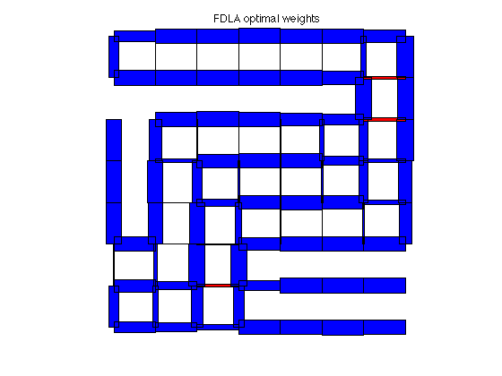
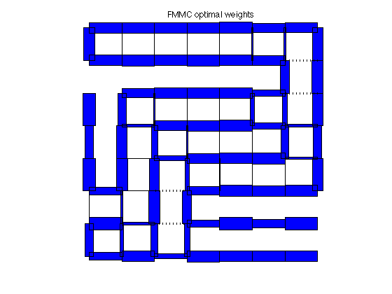
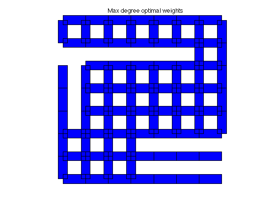
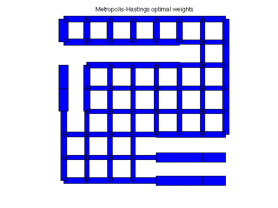

% S. Boyd, et. al., "Convex Optimization of Graph Laplacian Eigenvalues" % ICM'06 talk examples (www.stanford.edu/~boyd/cvx_opt_graph_lapl_eigs.html) % Written for CVX by Almir Mutapcic 08/29/06 % (figures are generated) % % In this example we consider a graph described by the incidence matrix A. % Each edge has a weight W_i, and we optimize various functions of the % edge weights as described in the referenced paper; in particular, % % - the fastest distributed linear averaging (FDLA) problem (fdla.m) % - the fastest mixing Markov chain (FMMC) problem (fmmc.m) % % Then we compare these solutions to the heuristics listed below: % % - maximum-degree heuristic (max_deg.m) % - constant weights that yield fastest averaging (best_const.m) % - Metropolis-Hastings heuristic (mh.m) % generate a cut-grid graph example [A,xy] = cut_grid_data; % Compute edge weights: some optimal, some based on heuristics [n,m] = size(A); [ w_fdla, rho_fdla ] = fdla(A); [ w_fmmc, rho_fmmc ] = fmmc(A); [ w_md, rho_md ] = max_deg(A); [ w_bc, rho_bc ] = best_const(A); [ w_mh, rho_mh ] = mh(A); tau_fdla = 1/log(1/rho_fdla); tau_fmmc = 1/log(1/rho_fmmc); tau_md = 1/log(1/rho_md); tau_bc = 1/log(1/rho_bc); tau_mh = 1/log(1/rho_mh); fprintf(1,'\nResults:\n'); fprintf(1,'FDLA weights:\t\t rho = %5.4f \t tau = %5.4f\n',rho_fdla,tau_fdla); fprintf(1,'FMMC weights:\t\t rho = %5.4f \t tau = %5.4f\n',rho_fmmc,tau_fmmc); fprintf(1,'M-H weights:\t\t rho = %5.4f \t tau = %5.4f\n',rho_mh,tau_mh); fprintf(1,'MAX_DEG weights:\t rho = %5.4f \t tau = %5.4f\n',rho_md,tau_md); fprintf(1,'BEST_CONST weights:\t rho = %5.4f \t tau = %5.4f\n',rho_bc,tau_bc); % plot results figure(1), clf plotgraph(A,xy,w_fdla); text(0.425,1.05,'FDLA optimal weights') figure(2), clf plotgraph(A,xy,w_fmmc); text(0.425,1.05,'FMMC optimal weights') figure(3), clf plotgraph(A,xy,w_md); text(0.375,1.05,'Max degree optimal weights') figure(4), clf plotgraph(A,xy,w_bc); text(0.375,1.05,'Best constant optimal weights') figure(5), clf plotgraph(A,xy,w_mh); text(0.3,1.05,'Metropolis-Hastings optimal weights')
Calling Mosek 9.1.9: 4184 variables, 120 equality constraints
For improved efficiency, Mosek is solving the dual problem.
------------------------------------------------------------
MOSEK Version 9.1.9 (Build date: 2019-11-21 11:32:15)
Copyright (c) MOSEK ApS, Denmark. WWW: mosek.com
Platform: MACOSX/64-X86
Problem
Name :
Objective sense : min
Type : CONIC (conic optimization problem)
Constraints : 120
Cones : 0
Scalar variables : 24
Matrix variables : 2
Integer variables : 0
Optimizer started.
Presolve started.
Linear dependency checker started.
Linear dependency checker terminated.
Eliminator started.
Freed constraints in eliminator : 0
Eliminator terminated.
Eliminator started.
Freed constraints in eliminator : 0
Eliminator terminated.
Eliminator - tries : 2 time : 0.00
Lin. dep. - tries : 1 time : 0.00
Lin. dep. - number : 0
Presolve terminated. Time: 0.00
Problem
Name :
Objective sense : min
Type : CONIC (conic optimization problem)
Constraints : 120
Cones : 0
Scalar variables : 24
Matrix variables : 2
Integer variables : 0
Optimizer - threads : 8
Optimizer - solved problem : the primal
Optimizer - Constraints : 120
Optimizer - Cones : 1
Optimizer - Scalar variables : 25 conic : 25
Optimizer - Semi-definite variables: 2 scalarized : 4160
Factor - setup time : 0.00 dense det. time : 0.00
Factor - ML order time : 0.00 GP order time : 0.00
Factor - nonzeros before factor : 7260 after factor : 7260
Factor - dense dim. : 0 flops : 2.43e+06
ITE PFEAS DFEAS GFEAS PRSTATUS POBJ DOBJ MU TIME
0 3.2e+01 2.0e+00 1.0e+00 0.00e+00 0.000000000e+00 0.000000000e+00 1.0e+00 0.01
1 3.1e+00 1.9e-01 2.0e-01 -8.72e-01 -8.019510317e+00 -4.401131508e+00 9.8e-02 0.02
2 1.2e+00 7.7e-02 1.3e-02 1.89e+00 -2.718140559e+00 -2.709331389e+00 3.9e-02 0.02
3 4.3e-01 2.7e-02 3.2e-03 3.77e+00 -1.042480075e+00 -1.000747146e+00 1.3e-02 0.02
4 1.0e-01 6.4e-03 3.5e-04 1.16e+00 -1.020758837e+00 -1.012170926e+00 3.2e-03 0.03
5 2.2e-02 1.4e-03 3.5e-05 1.07e+00 -9.933590824e-01 -9.916179623e-01 7.1e-04 0.03
6 4.3e-03 2.7e-04 2.8e-06 1.01e+00 -9.900646661e-01 -9.897875730e-01 1.4e-04 0.04
7 1.6e-03 1.0e-04 6.0e-07 1.00e+00 -9.886708058e-01 -9.885799220e-01 5.1e-05 0.04
8 5.5e-04 3.4e-05 1.1e-07 1.00e+00 -9.884275770e-01 -9.884069306e-01 1.7e-05 0.04
9 1.4e-04 8.7e-06 1.3e-08 1.00e+00 -9.883031046e-01 -9.882987307e-01 4.4e-06 0.05
10 2.2e-05 1.4e-06 7.1e-10 1.00e+00 -9.882948441e-01 -9.882944267e-01 6.8e-07 0.05
11 2.7e-06 1.7e-07 3.2e-11 1.00e+00 -9.882922134e-01 -9.882921630e-01 8.6e-08 0.05
12 2.0e-07 1.2e-08 6.0e-13 1.00e+00 -9.882919077e-01 -9.882919043e-01 6.2e-09 0.06
13 1.3e-08 9.3e-10 1.0e-14 1.00e+00 -9.882918850e-01 -9.882918847e-01 4.1e-10 0.06
Optimizer terminated. Time: 0.07
Interior-point solution summary
Problem status : PRIMAL_AND_DUAL_FEASIBLE
Solution status : OPTIMAL
Primal. obj: -9.8829188496e-01 nrm: 1e+00 Viol. con: 5e-08 var: 0e+00 barvar: 0e+00
Dual. obj: -9.8829188474e-01 nrm: 1e+00 Viol. con: 0e+00 var: 4e-10 barvar: 9e-10
Optimizer summary
Optimizer - time: 0.07
Interior-point - iterations : 13 time: 0.06
Basis identification - time: 0.00
Primal - iterations : 0 time: 0.00
Dual - iterations : 0 time: 0.00
Clean primal - iterations : 0 time: 0.00
Clean dual - iterations : 0 time: 0.00
Simplex - time: 0.00
Primal simplex - iterations : 0 time: 0.00
Dual simplex - iterations : 0 time: 0.00
Mixed integer - relaxations: 0 time: 0.00
------------------------------------------------------------
Status: Solved
Optimal value (cvx_optval): +0.988292
Calling Mosek 9.1.9: 4366 variables, 143 equality constraints
For improved efficiency, Mosek is solving the dual problem.
------------------------------------------------------------
MOSEK Version 9.1.9 (Build date: 2019-11-21 11:32:15)
Copyright (c) MOSEK ApS, Denmark. WWW: mosek.com
Platform: MACOSX/64-X86
Problem
Name :
Objective sense : min
Type : CONIC (conic optimization problem)
Constraints : 143
Cones : 0
Scalar variables : 206
Matrix variables : 2
Integer variables : 0
Optimizer started.
Presolve started.
Linear dependency checker started.
Linear dependency checker terminated.
Eliminator started.
Freed constraints in eliminator : 0
Eliminator terminated.
Eliminator started.
Freed constraints in eliminator : 0
Eliminator terminated.
Eliminator - tries : 2 time : 0.00
Lin. dep. - tries : 1 time : 0.00
Lin. dep. - number : 0
Presolve terminated. Time: 0.00
Problem
Name :
Objective sense : min
Type : CONIC (conic optimization problem)
Constraints : 143
Cones : 0
Scalar variables : 206
Matrix variables : 2
Integer variables : 0
Optimizer - threads : 8
Optimizer - solved problem : the primal
Optimizer - Constraints : 143
Optimizer - Cones : 1
Optimizer - Scalar variables : 207 conic : 48
Optimizer - Semi-definite variables: 2 scalarized : 4160
Factor - setup time : 0.00 dense det. time : 0.00
Factor - ML order time : 0.00 GP order time : 0.00
Factor - nonzeros before factor : 1.03e+04 after factor : 1.03e+04
Factor - dense dim. : 0 flops : 2.83e+06
ITE PFEAS DFEAS GFEAS PRSTATUS POBJ DOBJ MU TIME
0 1.3e+02 2.0e+00 1.0e+00 0.00e+00 0.000000000e+00 0.000000000e+00 1.0e+00 0.01
1 5.1e+01 7.9e-01 7.9e-02 8.11e-01 -3.046146012e-01 -5.763859839e-01 4.0e-01 0.02
2 1.0e+01 1.6e-01 6.5e-03 1.22e+00 -8.862518414e-01 -9.308217049e-01 7.9e-02 0.02
3 3.7e-01 5.7e-03 9.2e-05 1.15e+00 -9.979998593e-01 -9.987091101e-01 2.9e-03 0.03
4 9.1e-02 1.4e-03 1.1e-05 1.03e+00 -9.935245223e-01 -9.936931348e-01 7.1e-04 0.03
5 2.1e-02 3.2e-04 1.2e-06 1.02e+00 -9.912583259e-01 -9.912972989e-01 1.6e-04 0.03
6 9.1e-03 1.4e-04 3.5e-07 1.03e+00 -9.899472992e-01 -9.899645638e-01 7.1e-05 0.04
7 4.6e-03 7.1e-05 1.3e-07 1.03e+00 -9.893460524e-01 -9.893547576e-01 3.6e-05 0.04
8 2.6e-03 4.1e-05 5.5e-08 1.02e+00 -9.891541777e-01 -9.891591871e-01 2.1e-05 0.04
9 9.2e-04 1.4e-05 1.1e-08 1.01e+00 -9.889286588e-01 -9.889304051e-01 7.2e-06 0.05
10 4.2e-04 6.5e-06 3.4e-09 1.01e+00 -9.888803217e-01 -9.888811176e-01 3.3e-06 0.05
11 1.5e-04 2.3e-06 7.1e-10 1.01e+00 -9.888444131e-01 -9.888446958e-01 1.2e-06 0.06
12 6.7e-05 1.0e-06 2.2e-10 1.00e+00 -9.888354479e-01 -9.888355757e-01 5.3e-07 0.06
13 1.4e-05 2.2e-07 2.1e-11 1.00e+00 -9.888280617e-01 -9.888280892e-01 1.1e-07 0.07
14 4.1e-06 6.4e-08 3.3e-12 1.00e+00 -9.888267289e-01 -9.888267368e-01 3.2e-08 0.07
15 1.2e-06 1.9e-08 5.5e-13 1.00e+00 -9.888263244e-01 -9.888263268e-01 9.8e-09 0.07
16 4.7e-07 7.3e-09 1.3e-13 9.99e-01 -9.888262223e-01 -9.888262232e-01 3.7e-09 0.08
17 1.4e-07 2.4e-09 2.0e-14 1.00e+00 -9.888261734e-01 -9.888261737e-01 1.1e-09 0.08
18 4.6e-08 1.2e-08 3.8e-15 1.00e+00 -9.888261614e-01 -9.888261615e-01 3.6e-10 0.08
Optimizer terminated. Time: 0.09
Interior-point solution summary
Problem status : PRIMAL_AND_DUAL_FEASIBLE
Solution status : OPTIMAL
Primal. obj: -9.8882616142e-01 nrm: 1e+00 Viol. con: 3e-08 var: 2e-11 barvar: 0e+00
Dual. obj: -9.8882616151e-01 nrm: 1e+00 Viol. con: 0e+00 var: 2e-10 barvar: 7e-09
Optimizer summary
Optimizer - time: 0.09
Interior-point - iterations : 18 time: 0.09
Basis identification - time: 0.00
Primal - iterations : 0 time: 0.00
Dual - iterations : 0 time: 0.00
Clean primal - iterations : 0 time: 0.00
Clean dual - iterations : 0 time: 0.00
Simplex - time: 0.00
Primal simplex - iterations : 0 time: 0.00
Dual simplex - iterations : 0 time: 0.00
Mixed integer - relaxations: 0 time: 0.00
------------------------------------------------------------
Status: Solved
Optimal value (cvx_optval): +0.988826
Results:
FDLA weights: rho = 0.9883 tau = 84.9099
FMMC weights: rho = 0.9888 tau = 88.9938
M-H weights: rho = 0.9917 tau = 120.2442
MAX_DEG weights: rho = 0.9927 tau = 136.7523
BEST_CONST weights: rho = 0.9921 tau = 126.3450
   